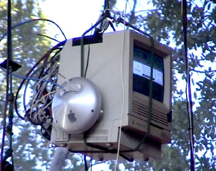

Adelaide Festival Centre Foyer
Aug 6 - Sep 7 2001, 10am to 5pm
Weighting for Data has now closed at the Adelaide Festival Centre. Look out for it at a venue near you sometime soon!
Weighting for Data investigates the interaction of the real and the virtual by providing an interface that assumes data has mass. Viewers may wander beneath the Mac SE 30 as it rises and falls, depending on how full it's hard disk is. Online viewers may alter the effective weight of the unit by copying files to it's hard disk and by deleting files. Online visitors also see a live video image from the SE 30's onboard webcam.

weighting for data was part of the 2001 moving image program of SALA Week 2001
hugethanks to Stephen Quick, Adam Claridge, Fulvia Mantelli, Jo Holmes, the mechs at the Adelaide Festival Centre
contact jesse reynolds via email: jesse at va dot com dot au